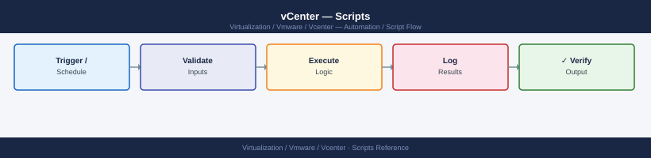

vCenter — Scripts¶

Before you begin¶
- Access: vCenter read-only minimum; Administrator role for remediation steps
- Timing: safe to run during business hours unless a step is marked ⚠ (causes interruption)
- Dependencies: no active upgrades or migrations on the same infrastructure
- Logging: capture command output — paste into the change record on completion
VM Health and Inventory Report (PowerShell / PowerCLI)¶
Connect to vCenter, enumerate all VMs, flag hygiene issues (stale snapshots, outdated Tools, missing backup tag), and export to CSV.
#Requires -Modules VMware.PowerCLI
# vcenter_vm_inventory.ps1
# Usage: pwsh -File vcenter_vm_inventory.ps1
# Env vars: VCENTER_HOST, VC_USER, VC_PASS
param(
[string]$VCenterHost = $env:VCENTER_HOST,
[string]$VCUser = $env:VC_USER,
[string]$VCPass = $env:VC_PASS,
[string]$CsvOutput = "vm_inventory_$(Get-Date -Format 'yyyyMMdd_HHmmss').csv",
[int]$SnapAgeDays = 7
)
Set-PowerCLIConfiguration -InvalidCertificateAction Ignore -Confirm:$false | Out-Null
$cred = New-Object System.Management.Automation.PSCredential(
$VCUser, (ConvertTo-SecureString $VCPass -AsPlainText -Force)
)
Connect-VIServer -Server $VCenterHost -Credential $cred -ErrorAction Stop | Out-Null
$now = Get-Date
$report = [System.Collections.Generic.List[PSObject]]::new()
$flagged = 0
foreach ($vm in (Get-VM | Sort-Object Name)) {
$host = $vm.VMHost.Name
$cluster = (Get-Cluster -VMHost $vm.VMHost -ErrorAction SilentlyContinue).Name
$ds = ($vm | Get-Datastore | Select-Object -First 1).Name
$snaps = Get-Snapshot -VM $vm -ErrorAction SilentlyContinue
$oldSnaps = @($snaps | Where-Object { ($now - $_.Created).TotalDays -gt $SnapAgeDays })
$toolsVersion = $vm.ExtensionData.Guest.ToolsVersionStatus2
$tags = Get-TagAssignment -Entity $vm -ErrorAction SilentlyContinue | Select-Object -ExpandProperty Tag | ForEach-Object { $_.Name }
$hasBackupTag = ($tags -match 'backup') -as [bool]
$flags = @()
if ($toolsVersion -eq 'guestToolsNeedUpgrade') { $flags += 'ToolsOutdated' }
if ($oldSnaps.Count -gt 0) { $flags += "OldSnaps:$($oldSnaps.Count)" }
if (-not $hasBackupTag) { $flags += 'NoBackupTag' }
if ($flags) { $flagged++ }
$row = [PSCustomObject]@{
Name = $vm.Name
PowerState = $vm.PowerState
Host = $host
Cluster = $cluster
Datastore = $ds
vCPU = $vm.NumCpu
MemoryGB = [Math]::Round($vm.MemoryGB, 1)
SnapshotCount = $snaps.Count
Flags = $flags -join '; '
}
$report.Add($row)
}
$report | Export-Csv -Path $CsvOutput -NoTypeInformation
Write-Host "Total VMs : $($report.Count)"
Write-Host "Flagged : $flagged"
Write-Host "CSV saved : $CsvOutput"
Disconnect-VIServer -Confirm:$false
exit ($flagged -gt 0 ? 1 : 0)
Cluster Capacity Report (PowerShell / PowerCLI)¶
Print a formatted table of CPU and memory utilization per cluster, including HA overhead and VM density, and warn above 80%.
#Requires -Modules VMware.PowerCLI
# vcenter_cluster_capacity.ps1
# Usage: pwsh -File vcenter_cluster_capacity.ps1
param(
[string]$VCenterHost = $env:VCENTER_HOST,
[string]$VCUser = $env:VC_USER,
[string]$VCPass = $env:VC_PASS,
[int]$WarnPercent = 80
)
Set-PowerCLIConfiguration -InvalidCertificateAction Ignore -Confirm:$false | Out-Null
$cred = New-Object System.Management.Automation.PSCredential(
$VCUser, (ConvertTo-SecureString $VCPass -AsPlainText -Force)
)
Connect-VIServer -Server $VCenterHost -Credential $cred -ErrorAction Stop | Out-Null
$header = "{0,-30} {1,6} {2,6} {3,8} {4,8} {5,8} {6,8} {7,6} {8,6} {9}"
$divider = "-" * 95
Write-Host ($header -f "Cluster", "Hosts", "VMs", "CPU GHz", "CPU Used", "CPU%", "Mem GB", "Mem Used", "Mem%", "Status")
Write-Host $divider
$overallExit = 0
foreach ($cluster in (Get-Cluster | Sort-Object Name)) {
$hosts = Get-VMHost -Location $cluster
$vms = Get-VM -Location $cluster
$totalCpuGHz = [Math]::Round(($hosts | Measure-Object -Property CpuTotalMhz -Sum).Sum / 1000, 1)
$usedCpuGHz = [Math]::Round(($hosts | Measure-Object -Property CpuUsageMhz -Sum).Sum / 1000, 1)
$cpuPct = if ($totalCpuGHz -gt 0) { [Math]::Round($usedCpuGHz / $totalCpuGHz * 100, 1) } else { 0 }
$totalMemGB = [Math]::Round(($hosts | Measure-Object -Property MemoryTotalGB -Sum).Sum, 1)
$usedMemGB = [Math]::Round(($hosts | Measure-Object -Property MemoryUsageGB -Sum).Sum, 1)
$memPct = if ($totalMemGB -gt 0) { [Math]::Round($usedMemGB / $totalMemGB * 100, 1) } else { 0 }
$status = "OK"
if ($cpuPct -ge $WarnPercent -or $memPct -ge $WarnPercent) {
$status = "WARNING"
$overallExit = 1
}
Write-Host ($header -f $cluster.Name, $hosts.Count, $vms.Count,
$totalCpuGHz, $usedCpuGHz, "${cpuPct}%",
$totalMemGB, $usedMemGB, "${memPct}%", $status)
}
Write-Host $divider
Disconnect-VIServer -Confirm:$false
exit $overallExit
Daily Check Script (PowerShell/PowerCLI)¶
Connect to vCenter and run daily operational checks: host connection states, datastore capacity, stale snapshots, active alarms, and vCenter service health.
#Requires -Modules VMware.PowerCLI
# vc_daily_check.ps1
# Usage: pwsh -File vc_daily_check.ps1
# Env vars: VCENTER_HOST, VC_USER, VC_PASS
param(
[string]$VCenterHost = $env:VCENTER_HOST,
[string]$VCUser = $env:VC_USER,
[string]$VCPass = $env:VC_PASS,
[int]$SnapAgeDays = 7,
[double]$DsFreeMinPct = 20
)
Set-PowerCLIConfiguration -InvalidCertificateAction Ignore -Confirm:$false | Out-Null
$cred = New-Object System.Management.Automation.PSCredential(
$VCUser, (ConvertTo-SecureString $VCPass -AsPlainText -Force)
)
Connect-VIServer -Server $VCenterHost -Credential $cred -ErrorAction Stop | Out-Null
$exit = 0
$now = Get-Date
function Pass($msg) { Write-Host " [PASS] $msg" -ForegroundColor Green }
function Fail($msg) { Write-Host " [FAIL] $msg" -ForegroundColor Red; $script:exit = 1 }
function Warn($msg) { Write-Host " [WARN] $msg" -ForegroundColor Yellow }
Write-Host "`n=== vCenter Daily Check: $VCenterHost ===" -ForegroundColor Cyan
# Host connectivity
Write-Host "--- Host Connectivity ---"
$disconnected = Get-VMHost | Where-Object { $_.ConnectionState -ne 'Connected' }
if ($disconnected) {
$disconnected | ForEach-Object { Fail "Host $($_.Name) is $($_.ConnectionState)" }
} else {
Pass "All hosts connected ($(( Get-VMHost ).Count) hosts)"
}
# Datastore capacity
Write-Host "`n--- Datastore Capacity ---"
$lowDs = Get-Datastore | Where-Object {
$_.CapacityMB -gt 0 -and ($_.FreeSpaceMB / $_.CapacityMB * 100) -lt $DsFreeMinPct
}
if ($lowDs) {
$lowDs | ForEach-Object {
$pct = [Math]::Round($_.FreeSpaceMB / $_.CapacityMB * 100, 1)
Fail "Datastore $($_.Name): only ${pct}% free"
}
} else {
Pass "All datastores above ${DsFreeMinPct}% free"
}
# Stale snapshots
Write-Host "`n--- Stale Snapshots (>$SnapAgeDays days) ---"
$staleSnaps = Get-VM | Get-Snapshot -ErrorAction SilentlyContinue |
Where-Object { ($now - $_.Created).TotalDays -gt $SnapAgeDays }
if ($staleSnaps) {
$staleSnaps | ForEach-Object {
$age = [Math]::Floor(($now - $_.Created).TotalDays)
Warn "VM $($_.VM.Name): snapshot '$($_.Name)' is ${age} days old"
}
} else {
Pass "No snapshots older than $SnapAgeDays days"
}
Disconnect-VIServer -Confirm:$false
if ($exit -eq 0) { Write-Host "RESULT: PASS" -ForegroundColor Green }
else { Write-Host "RESULT: FAIL" -ForegroundColor Red }
exit $exit
Change Pre-Check Script (PowerShell/PowerCLI)¶
Run before any maintenance window. Confirms no disconnected hosts, no inaccessible datastores, no critical alarms, no running migrations, healthy vCenter services, and NTP in sync.
#Requires -Modules VMware.PowerCLI
# vc_precheck.ps1
# Usage: pwsh -File vc_precheck.ps1
# Env vars: VCENTER_HOST, VC_USER, VC_PASS
param(
[string]$VCenterHost = $env:VCENTER_HOST,
[string]$VCUser = $env:VC_USER,
[string]$VCPass = $env:VC_PASS
)
Set-PowerCLIConfiguration -InvalidCertificateAction Ignore -Confirm:$false | Out-Null
$cred = New-Object System.Management.Automation.PSCredential(
$VCUser, (ConvertTo-SecureString $VCPass -AsPlainText -Force)
)
Connect-VIServer -Server $VCenterHost -Credential $cred -ErrorAction Stop | Out-Null
$exit = 0
function Go($msg) { Write-Host " [GO] $msg" -ForegroundColor Green }
function NoGo($msg) { Write-Host " [NO-GO] $msg" -ForegroundColor Red; $script:exit = 2 }
Write-Host "`n=== vCenter Change Pre-Check: $VCenterHost ===" -ForegroundColor Cyan
$disc = (Get-VMHost | Where-Object { $_.ConnectionState -ne 'Connected' }).Count
if ($disc -gt 0) { NoGo "$disc host(s) disconnected" } else { Go "All hosts connected" }
$inacc = (Get-Datastore | Where-Object { -not $_.ExtensionData.Summary.Accessible }).Count
if ($inacc -gt 0) { NoGo "$inacc inaccessible datastore(s)" } else { Go "All datastores accessible" }
$running = Get-Task -Status Running -ErrorAction SilentlyContinue |
Where-Object { $_.Name -match 'Migrate|vMotion|RelocateVM' }
if ($running) { NoGo "$($running.Count) migration task(s) in progress" }
else { Go "No migrations running" }
$ntpBad = Get-VMHost | Where-Object {
$ntp = $_ | Get-VMHostNTPServer
-not $ntp -or $ntp.Count -eq 0
}
if ($ntpBad) { NoGo "$($ntpBad.Count) host(s) have no NTP configured" }
else { Go "NTP configured on all hosts" }
Disconnect-VIServer -Confirm:$false
if ($exit -eq 0) { Write-Host "VERDICT: GO" -ForegroundColor Green }
else { Write-Host "VERDICT: NO-GO" -ForegroundColor Red }
exit $exit
Incident Triage Script (PowerShell/PowerCLI)¶
Capture disconnected hosts, inaccessible datastores, powered-off VMs, active alarms, recent tasks with errors, and vCenter service health to a timestamped file.
#Requires -Modules VMware.PowerCLI
# vc_incident_triage.ps1
# Usage: pwsh -File vc_incident_triage.ps1
# Env vars: VCENTER_HOST, VC_USER, VC_PASS
param(
[string]$VCenterHost = $env:VCENTER_HOST,
[string]$VCUser = $env:VC_USER,
[string]$VCPass = $env:VC_PASS
)
Set-PowerCLIConfiguration -InvalidCertificateAction Ignore -Confirm:$false | Out-Null
$cred = New-Object System.Management.Automation.PSCredential(
$VCUser, (ConvertTo-SecureString $VCPass -AsPlainText -Force)
)
Connect-VIServer -Server $VCenterHost -Credential $cred -ErrorAction Stop | Out-Null
$TS = Get-Date -Format "yyyyMMdd_HHmmss"
$OUT = "vc_triage_${VCenterHost}_${TS}.txt"
function Log($msg) { $msg | Tee-Object -FilePath $OUT -Append }
Log "=== vCenter Incident Triage: $VCenterHost ==="
Log "Timestamp: $(Get-Date)"
Log ""
Log "--- Disconnected Hosts ---"
Get-VMHost | Where-Object { $_.ConnectionState -ne 'Connected' } |
Select-Object Name, ConnectionState | Format-Table | Out-String | ForEach-Object { Log $_ }
Log "--- Inaccessible Datastores ---"
Get-Datastore | Where-Object { -not $_.ExtensionData.Summary.Accessible } |
Select-Object Name, Type | Format-Table | Out-String | ForEach-Object { Log $_ }
Log "--- Powered-Off VMs ---"
Get-VM | Where-Object { $_.PowerState -ne 'PoweredOn' } |
Select-Object Name, PowerState, VMHost | Format-Table | Out-String | ForEach-Object { Log $_ }
Log "--- Recent Tasks with Errors ---"
Get-Task -Status Error -ErrorAction SilentlyContinue | Select-Object -First 20 |
Select-Object Name, State, StartTime, FinishTime |
Format-Table | Out-String | ForEach-Object { Log $_ }
Log "Triage data saved to: $OUT"
Disconnect-VIServer -Confirm:$false
Write-Host "Triage data saved to: $OUT" -ForegroundColor Cyan
See also¶
Verify¶
- Alarms: vSphere Client → Home → Alarms — no new critical alarms after the operation
- Events: monitor the vCenter Events view for the affected object for 5 minutes
- Health check: run the morning health-check sequence for the affected product tier